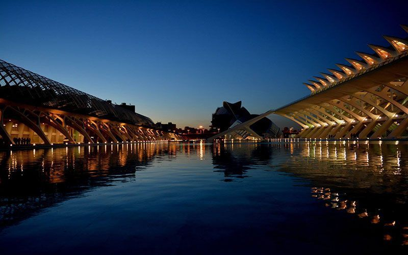
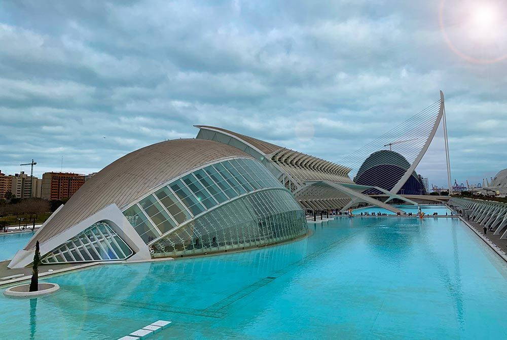
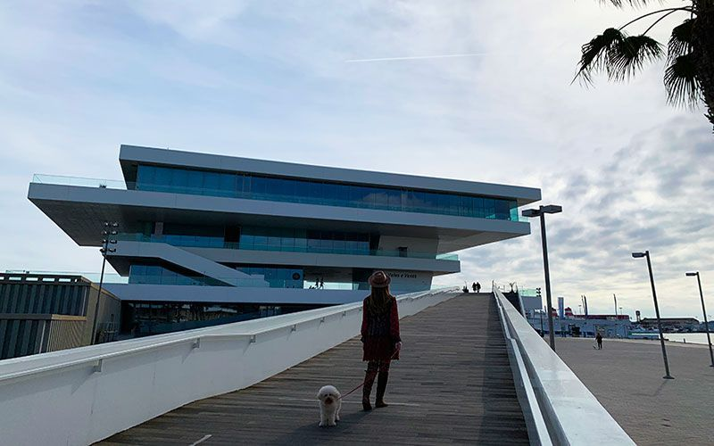

Web de las fiestas de Valencia
Como llegar a valencia.
¿Cómo llegar a Valencia? Pues para llegar a la capital del Turia tenéis 5 opciones: avión, bus, tren, coche o barco. Todo dependerá de vuestro lugar de origen, del presupuesto que tengáis y la ruta que estéis haciendo.
Valencia es una ciudad muy bien comunicada por tierra, mar y aire. Con el auge del turismo son cada vez más los vuelos y barcos que llegan a la ciudad.
Aquí os dejamos toda la información necesaria para llegar a Valencia en cualquier medio de transporte.
1 ¿Cómo llegar a Valencia en tren?
Una buena opción para llegar a Valencia es el tren. Si vais a Valencia en tren llegaréis a la estación del Norte o la estación de Joaquin Sorolla. Estas dos estaciones están pegadas y conectadas entre sí por un bus gratuito.
Podéis tomar el AVE (tren de alta velocidad) desde Madrid y en menos de dos horas llegaréis a la estación de Joaquín Sorolla de Valencia.
💰 Los precios para llegar a Valencia en tren o AVE varían de acuerdo a la época, pero aquí os dejamos unos aproximados (por trayecto) desde las principales ciudades españolas:
- AVE Madrid – Valencia: Duración del viaje 1.40 h./ Precio: 30-60 €
- EUROMED Barcelona – Valencia: Duración del viaje 2.40 h./ Precio: 30 €
- ALVIA/EUROMED Castellón – Valencia: Duración del viaje 1 h./ Precio: 10-20 €
- AVE Sevilla – Valencia: Duración del viaje 5 h. / Precio: 60-80 €
- EUROMED Alicante – Valencia: Duración del viaje 1.40 h./ Precio: 20 €
En la estación del Norte podréis encontrar servicio de consigna por si necesitáis dejar vuestras maletas ahí. El precio por día es de € 3.10 / 3.60 / 5.20 para taquillas pequeñas / medianas / grandes.
Información Renfe Valencia Estación del Norte:
- Información de estaciones: 912 432 343
- Información Renfe: 912 320 320
- Dirección: Calle Játiva, 24
La estación del Norte está en pleno centro de la ciudad, pero si lo necesitáis está bien conectada con el bus y el metro (parada Xativa).
2. ¿Cómo llegar a Valencia en bus?
También es posible llegar a Valencia en bus, pero yo no os lo recomiendo porque se hace mucho más pesado. La estación de autobuses de Valencia se encuentra a unos 30 minutos a pie del centro de la ciudad.
💰 Aquí os dejamos el tiempo promedio y precio aproximado (por trayecto) para llegar a Valencia en Bus desde las principales ciudades españolas.
- Madrid – Valencia: Duración del viaje 4 h./ Precio: 30€. Principal compañía: Avanza.
- Barcelona – Valencia: Duración del viaje 4 h. / Precio: 20€. Principal compañía: Alsa.
- Sevilla – Valencia: Duración del viaje 12 h. / Precio: 60€. Principal compañía: Alsa.
- Bilbao – Valencia: Duración del viaje 8h. / Precio: 36€. Principal compañía: Bilman.
🚌 Información de la estación de buses de Valencia.
- Telefóno: (+34) 963 46 62 66
- Dirección: Carrer de Menéndez Pidal, 11
🚌 Conexiones con transporte público:
- Autobús urbano: 95, C2
- Metro: Turia (a 3 minutos a pie de la estación)
3. ¿Cómo llegar a Valencia en coche?
Si vivís en España y disponéis de coche propio o si venís de otro país y alquiláis un coche podéis llegar a Valencia por carretera. Las autovías son muy buenas y no hay que pagar peaje, por lo que es un muy buena opción para parar en ciudades cercanas como Alicante, Castellón o Cuenca.
Las principales carreteras son la AP-7, que recorre de norte a sur toda la costa levantina, uniendo Valencia con Barcelona y Alicante y la A-3 que discurre hacia el centro de la península para ir a Madrid. Si váis en coche de Madrid a Valencia os tardaréis unas 4 horas aprox.
Aquí lo mejor es que pongáis el GPS para que os indique la mejor forma de llegar a Valencia desde vuestra ubicación.
Si os alojáis en el centro de Valencia tendréis que dejar el coche en un parking. Tened en cuenta que en el casco antiguo (barrio del Carmen) no se puede circular, pues solo pueden entrar residentes.
4. ¿Cómo llegar a Valencia en avión?
La forma más rápida de llegar a Valencia es en avión. Hay muchas ciudades de España que tienen vuelos directos a Valencia y, si los sacáis con tiempo, los podéis encontrar billetes hasta por 50 euros ida y vuelta.
Si llegáis a Valencia en avión aterrizaréis en el aeropuerto de Manises, ubicada a 9 km del centro de la ciudad.
Dentro del mismo aeropuerto encontraréis el metro que os llevará al centro de la ciudad en unos 20 minutos. Es una línea directa y solo tendréis que bajaros en la parada de Xativa, que os dejará a un minuto de la plaza del ayutamiento. El precio del billete sencillo ronda los 4 euros.
5. ¿Cómo llegar a Valencia en barco?
Si estáis haciendo un crucero por el mediterráneo es probable que vuestro barco haga una pequeña parada en la ciudad. Desde allí podéis coger un bus o un tranvía que os llevará hasta el centro, donde se encuentran los principales puntos de interés que visitar en Valencia.
